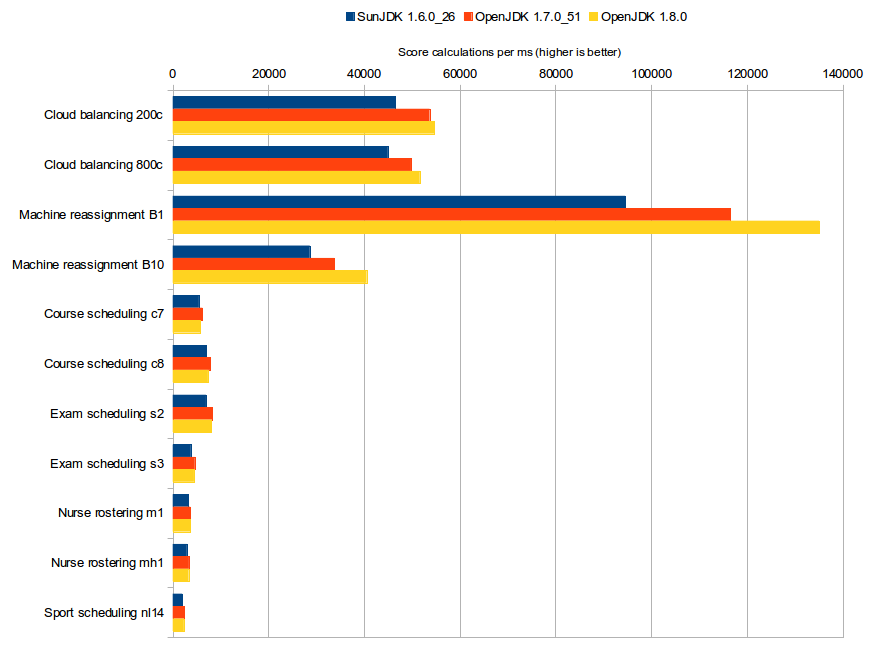

How much faster is Java 8?
Java SE 8 was released yesterday.
Traditionally, every new major JRE version comes with a free performance boost.
Do we get another free lunch? And how big is the gain this time?
Let’s benchmark it.
Benchmark methodology
Run the same code with 3 different JRE versions (SunJDK
1.6.0_26, OpenJDK1.7.0_51and OpenJDK1.8.0).
The code itself was written for Java 6 (both in syntax and JDK API’s usage) and compiled for Java 6 with OpenJDK 1.7.Each run takes about 55 minutes.
VM arguments:
-Xmx1536M -server
Software:Linux 3.2.0-59-generic-pae
Hardware:Intel® Xeon® CPU W3550 @ 3.07GHzEach run solves 13 planning problems with OptaPlanner.
Each planning problem runs for 5 minutes. It starts with a 30 second JVM warm up which is discarded.Solving a planning problem involves no IO (except a few milliseconds during startup to load the input).
A single CPU is completely saturated.
It constantly creates many short lived objects, and the GC collects them afterwards.The benchmarks measure the number of scores that can be calculated per millisecond. Higher is better.
Calculating a score for a proposed planning solution is non-trivial:
it involves many calculations, including checking for conflicts between every entity and every other entity.
To reproduce these benchmarks locally, build optaplanner from source
and run the main class
GeneralOptaPlannerBenchmarkApp.
Benchmark results
Executive summary

My observations:
On the biggest dataset (Machine Reassignment B10), which dwarfs any of the other datasets in size,
Java 8 is20%faster than Java 7, which was already17%faster than Java 6.In some cases, Java 8 is slower than Java 7.
Specially for the course scheduling datasets, Java 8 is6%slower than Java 7.
Hopefully new releases of Java 8 will resolve this performance regression soon.On average, Java 8 is only
1%faster than Java 7. This while Java 7 is already16%faster than Java 6.Despite that this is the first final release of OpenJDK 8, I did not find any regressions in Java 8.
OptaPlanner’s examples are 100% reproducible, so as expected, the different JRE’s give the exact same results at every single iteration.
Raw benchmark numbers
| JDK | Cloud balancing 200c | Cloud balancing 800c | Machine reassignment B1 | Machine reassignment B10 | Course scheduling c7 | Course scheduling c8 | Exam scheduling s2 | Exam scheduling s3 | Nurse rostering m1 | Nurse rostering mh1 | Sport scheduling nl14 |
|---|---|---|---|---|---|---|---|---|---|---|---|
SunJDK 1.6.0_26 | 46462 | 44963 | 94567 | 28655 | 5473 | 6989 | 6954 | 3785 | 3232 | 2948 | 1977 |
OpenJDK 1.7.0_51 | 53683 | 49798 | 116553 | 33733 | 6182 | 7848 | 8243 | 4606 | 3645 | 3377 | 2445 |
OpenJDK 1.8.0 | 54687 | 51625 | 135102 | 40529 | 5798 | 7357 | 8048 | 4441 | 3637 | 3324 | 2321 |
6 ⇒ 7 | 15.54% | 10.75% | 23.25% | 17.72% | 12.95% | 12.29% | 18.54% | 21.69% | 12.78% | 14.55% | 23.67% |
7 ⇒ 8 | 1.87% | 3.67% | 15.91% | 20.15% | -6.21% | -6.26% | -2.37% | -3.58% | -0.22% | -1.57% | -5.07% |
Dataset scale | 120k | 1920k | 500k | 250000k | 217k | 145k | 1705k | 1613k | 18k | 12k | 4k |
| JDK | Cloud balancing 200c | Cloud balancing 800c | Machine reassignment B1 | Machine reassignment B10 | Course scheduling c7 | Course scheduling c8 | Exam scheduling s2 | Exam scheduling s3 | Nurse rostering m1 | Nurse rostering mh1 | Sport scheduling nl14 |
|---|---|---|---|---|---|---|---|---|---|---|---|
OpenJDK 1.8.0 | 63404 | 55295 | 126743 | 38260 | 6072 | 7825 | 10518 | 7176 | 3872 | 3558 | 1252 |
OpenJDK 1.8.0_45 | 64715 | 56472 | 131941 | 36175 | 6499 | 8084 | 10406 | 7217 | 3905 | 3595 | 1354 |
1.8.0 ⇒ 1.8.0_45 | 2.07% | 2.13% | 4.10% | -5.45% | 7.03% | 3.31% | -1.06% | 0.57% | 0.85% | 1.04% | 8.15% |
Dataset scale | 120k | 1920k | 500k | 250000k | 217k | 145k | 1705k | 1613k | 18k | 12k | 4k |